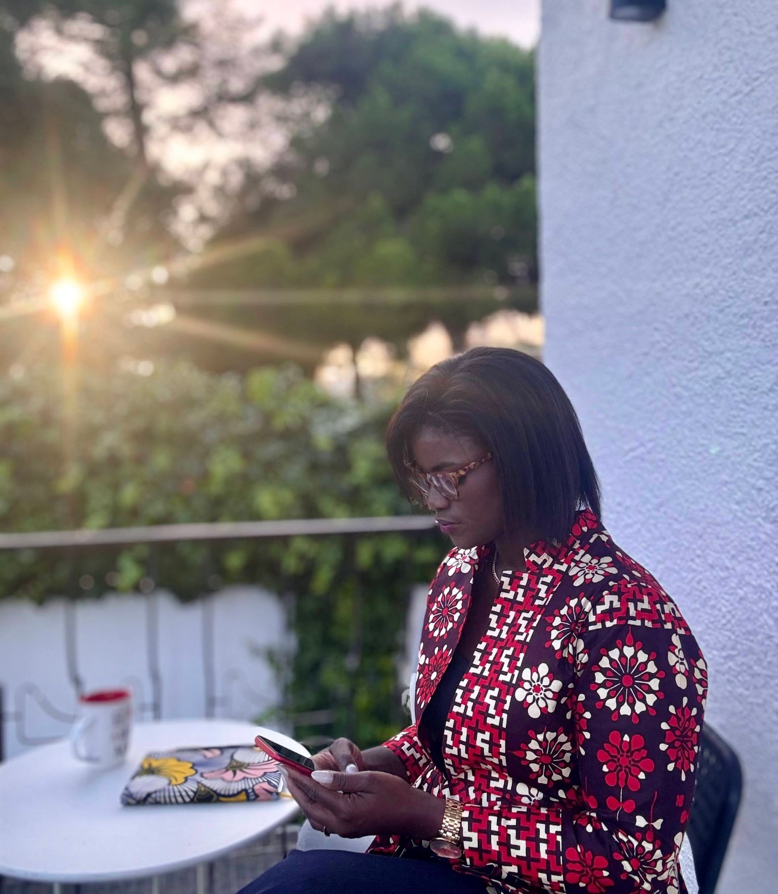

já te perguntaste…
“Porque é que repito sempre os mesmos erros?”
Padrões
“Porque é que acabo sempre no mesmo tipo de situação?”
Porque não são erros: são padrões. E um padrão repete-se até ser compreendido.

A origem
“De onde vêm os meus padrões?”
Da tua história: da educação, dos exemplos que tiveste e do que precisaste para te sentires segura.
Responsabilidade
“Então a culpa é minha?”
Não é culpa. É responsabilidade. Agora que vês o padrão, podes escolher diferente.

Como reconhecer
“Como é que reconheço um padrão?”
A situação muda.
As pessoas mudam.
Mas o final é sempre igual.
A mudança
“Dá para mudar?”
Sim. Primeiro compreende-se, depois muda-se. Sem julgamento.

Não há nada de errado contigo.
Existem padrões.
Se queres compreender os teus, a Essência é o primeiro passo.
Link na bio@sollangealmadabinha
@sollangealmadabinha
@sollangealmadabinha
@sollangealmadabinha
@sollangealmadabinha
@sollangealmadabinha
@sollangealmadabinha
Desliza →
Desliza →
Desliza →
Desliza →
Desliza →
Desliza →